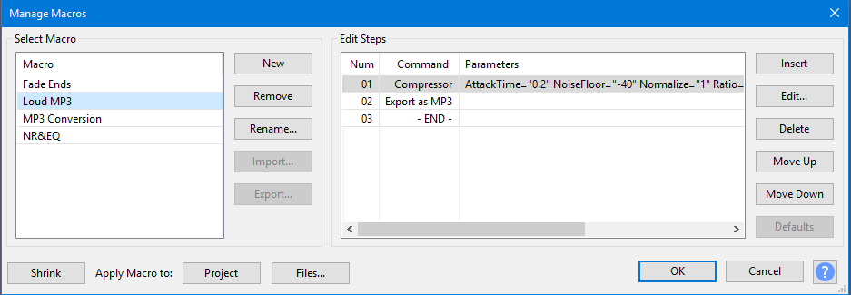
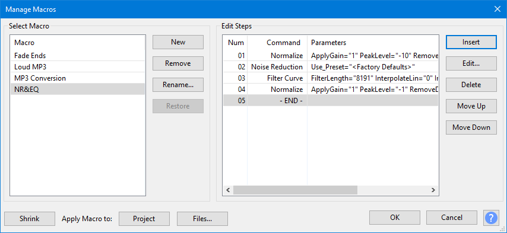

Macros Examples
In the image below we have added several additional Macros beyond the ones that are there as standard.

Example 1: Loud MP3
A batch processing Macro to compress and normalize WAV files then convert them to MP3:
- Insert Compressor to reduce the dynamic range of each WAV, also normalizing them to maximum amplitude of 0 dB
- Insert Export as MP3 to convert them to MP3 format
- Click "Apply Macro to:" to select the files on which to run the Macro.
- Click to close the "Manage Macros" window

- Alternatively you can choose , select the "Loud MP3" Macro then click "Apply Macro to:" where you can select the files on which to run the Macro.
Example 2: NR&EQ
An effects automation Macro for the current project that applies noise reduction and equalization:
- Insert Normalize with settings of:
- Remove any DC offset
- -10 dB (to allow for boosting frequencies later in the Macro without clipping)
- Insert Noise Reduction
- Insert Equalization (to perform the frequency adjustment)
- Insert another Normalize at different settings (without offset removal, setting a final amplitude of -1 dB)
- Click to close the "Manage Macros" window

- When later needed in your workflow, choose , select the "NR&EQ" Macro then click "Apply Macro to:" to apply the Macro to the selected track(s) in the current project window.
|
Useful Commands
The 'Select' command with 'Relative To=Selection' can be used to extend and contract a selection.
| Command | Description |
|---|---|
"Select: RelativeTo=Selection Start=-1 End=1" |
This command expands a selection by two seconds: |
"Select: RelativeTo=Selection Start=1 End=-1" |
This command contracts a selection by two seconds: |
"Select: RelativeTo=Selection Start=1 End=1" |
This command moves a selection right by one second: |
"SelTrackStartToEnd" |
This command (from ) Selects all audio in all selected tracks. |
"SelNextClip" "SelPrevClip" |
These commands are useful with Clips |
Extra Macros
Spectral Magickes Wacky-Macro
This macro takes a single mono track, and converts it to a stereo track, with one channel a spectrogram and the other a wave.
It is one example of how to creatively abuse the Macro system, since audacity is not set up to handle mixed views on wave tracks.
- Note the use of a TrackCount of 0.5 to select just one of two channels in a stereo track.
- The TrackCount of 0 is used to unselect all tracks.
SelectAll: Duplicate: Select:"Mode=Set" SetTrack:Pan="-1" Select:"Mode=Set" Track="1" SetTrack:Pan="1" Select:Mode="Set" TrackCount="2" MixAndRender: Select:Mode="Set" TrackCount="0.5" SetTrack:Display="Spectrogram" Select:"Mode=Set" TrackCount="0"
Reparations Magicke Spell
With normal project rate of 44100Hz, this selects about 126 samples centered on the cursor, and applies the 'Repair' effect to it. 'Repair' can only handle up to 128 samples.
SelectTime:End="0.00143" RelativeTo="Selection Start" Start="-0.00143" Repair:Use_Preset="<Factory Defaults>"
Links
< Back to: Macros < Back to: Manage Macros < Back to: Apply Macro